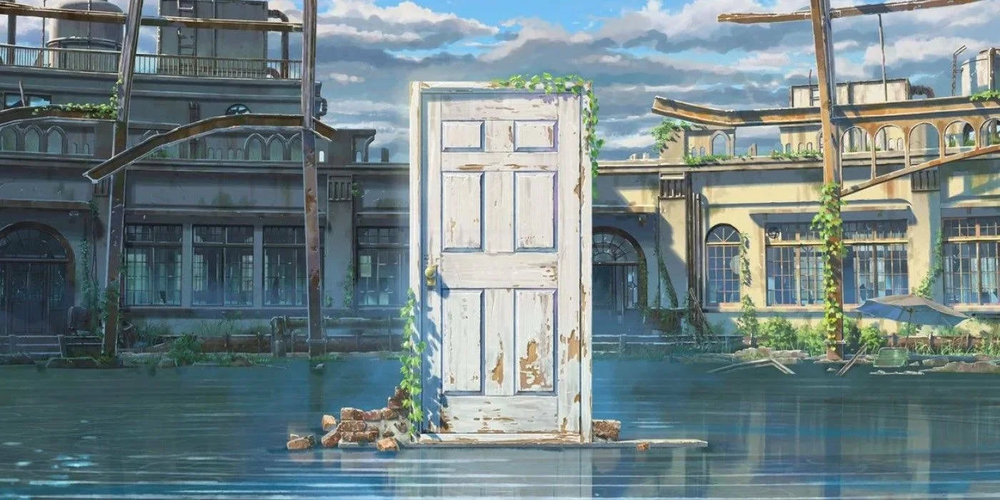

Suzume
Suzume, uma garota de 17 anos, vive em uma pacata cidade em Kyushu. Um dia, ela conhece um jovem viajante chamado Souta, que está procurando por uma porta misteriosa. Suzume o segue e encontra uma porta desgastada no meio de ruínas.
Ao abri-la, ela inadvertidamente liberta uma série de desastres por todo o Japão. Agora, Suzume e Souta devem embarcar em uma jornada perigosa para fechar essas "portas do desastre" antes que seja tarde demais.
ÁUDIO:
Japonês, Português (Brasil)
LEGENDAS:
Português (Brasil), Inglês
CLASSIFICAÇÃO:
12
Temas Sensíveis
GÊNEROS:
NOTA:
7.8/10